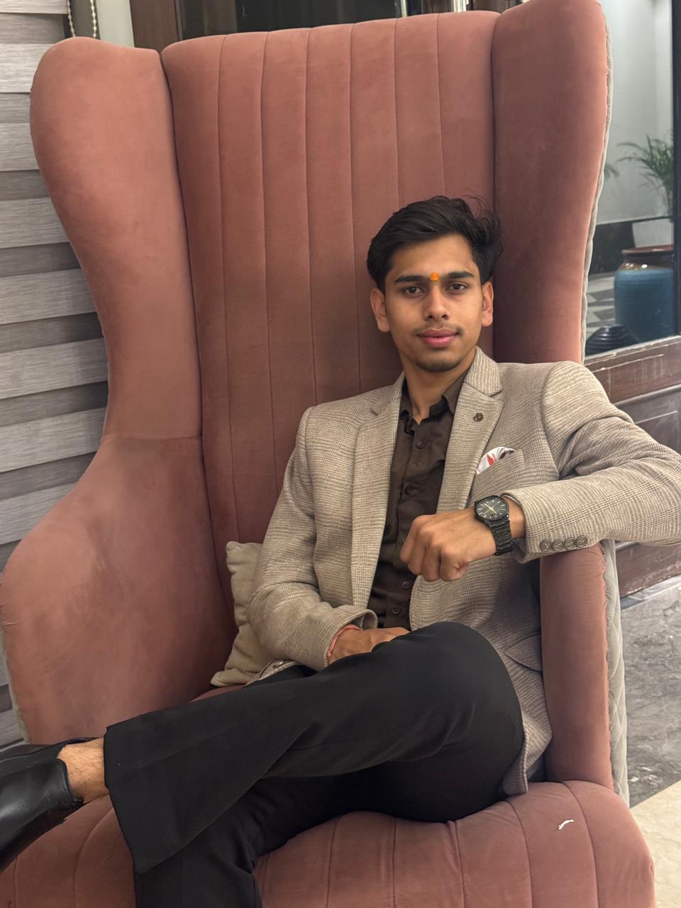

B.Tech CSE (2nd Year) | AIMT College
📍 Greater Noida, Alpha 2
Motivated and enthusiastic Computer Science Engineering student pursuing B.Tech (2nd Year) at AIMT College. Skilled in HTML, CSS, Java and C Programming. Passionate about Web Development, Problem Solving and building innovative software projects. Seeking opportunities to enhance technical skills and gain practical industry experience.
Developed an Atta Chakki Business Management System to manage customer records, order tracking, payment details and daily business operations efficiently.
Designed and developed a responsive portfolio website using HTML and CSS.
Seeking opportunities to enhance my technical skills and gain practical experience in software development while contributing to innovative projects.
Cricket, Volleyball, Stock Market Investing, Mutual Funds, Trading and Learning New Technologies.
Developed a program that recommends songs according to user mood. Inspired by Spotify recommendation systems and designed to provide personalized music suggestions.
Created a responsive business website using HTML, CSS and JavaScript. Integrated Call, WhatsApp and Email functionalities with a modern user-friendly design.
Bachelor of Technology (Computer Science Engineering)
AIMT College
Currently in 2nd Year